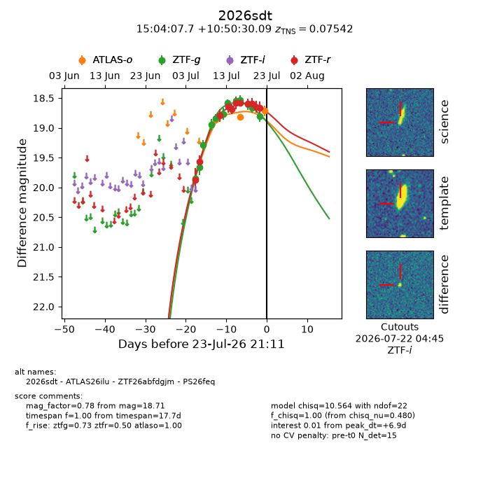
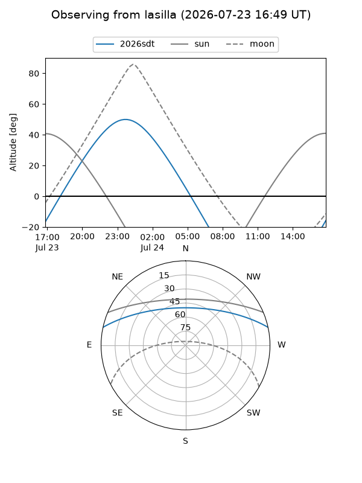
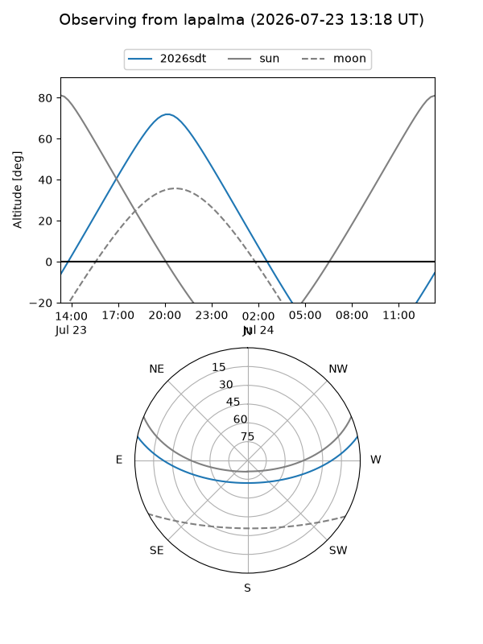
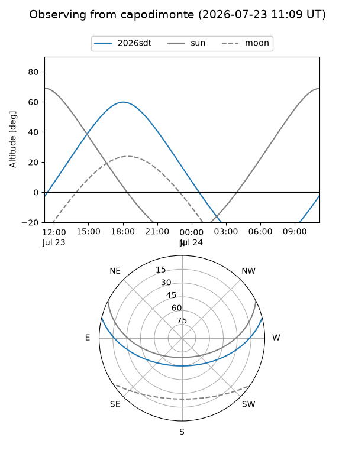
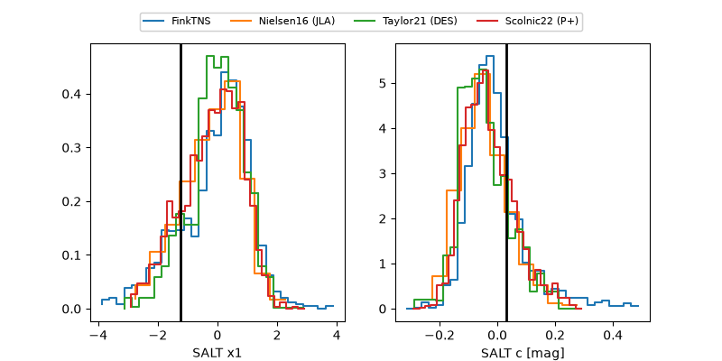

2026sdt
Target 2026sdt at 2026-07-23 21:14
Aliases and brokers:
FINK-ZTF: ztf.fink-portal.org/ZTF26abfdgjm
Lasair-ZTF: lasair-ztf.lsst.ac.uk/objects/ZTF26abfdgjm
ALeRCE-ZTF: alerce.online/object/ZTF26abfdgjm
YSE-PZ: ziggy.ucolick.org/yse/transient_detail/2026sdt
TNS name: wis-tns.org/object/2026sdt
Direct TNS query: direct search
alt names
ZTF26abfdgjm (ztf,fink_ztf)
2026sdt (tns,yse)
ATLAS26ilu (atlas)
PS26feq (panstarrs)
Coordinates:
equatorial (ra, dec) = 226.0319,+10.84169
equatorial (HMS+DMS) = 15:04:07.65,+10:50:30.09
galactic (l, b) = (11.8234,+54.82703)
Flags:
TNS type: SN Ia
TNS redshift: 0.0754
peak dt: +6.9
Photometry:
last atlaso=18.71, ztfg=18.80, ztfr=18.67
3 atlaso, 12 ztfg, 11 ztfr detections
Lightcurve

Visibility



Additional plots
